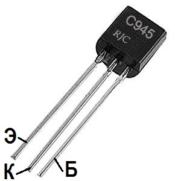

Транзистор C945
Транзистор C945 – биполярный, высокочастотный, кремниевый, n-p-n транзистор средней рассеиваемой мощности. Используется в переключающих, усилительных и генераторных устройствах средней и высокой частоты.
Комплементарной парой для C945 является транзистор A733 c p-n-p структурой.
Корпус ТО-92.

Рис. 1 -Внешний вид и цоколевка транзистора C945
Таблица 1
| Параметр | Значение |
|---|---|
| Напряжение коллектор-эмиттер, не более | 50 В |
| Напряжение коллектор-база, не более | 60 В |
| Напряжение эмиттер-база, не более | 5 В |
| Ток коллектора, не более | 0,15 А |
| Рассеиваемая мощность коллектора, не более | 0,4 Вт |
| Коэффициент усиления транзистора по току (h21э) | 70...700 |
| Граничная частота коэффициента передачи тока | 150 МГц |